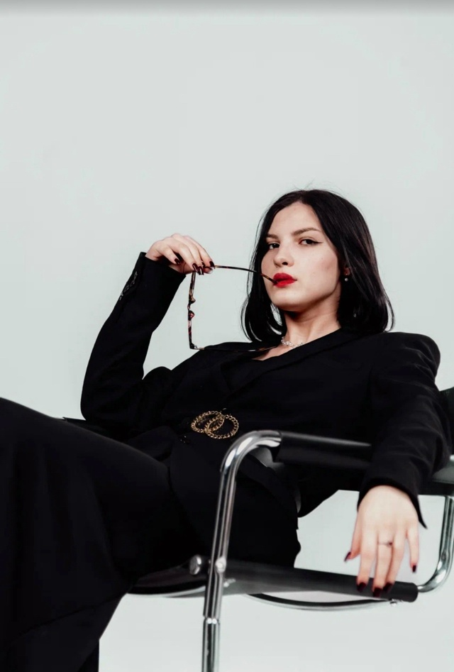
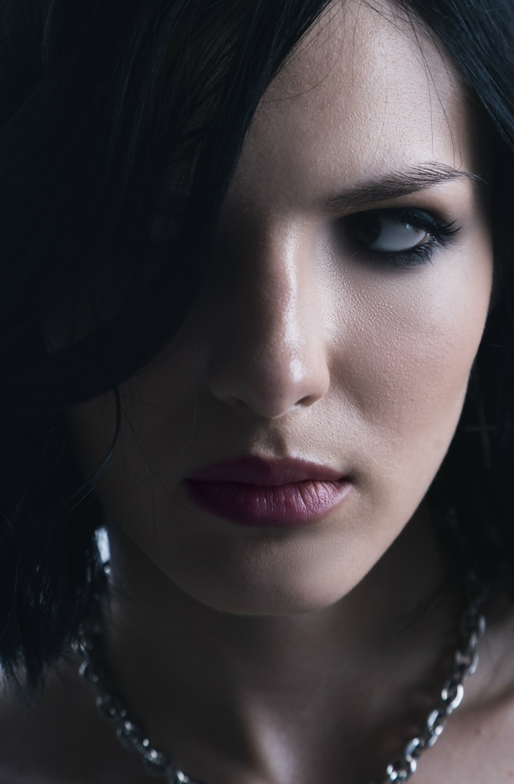
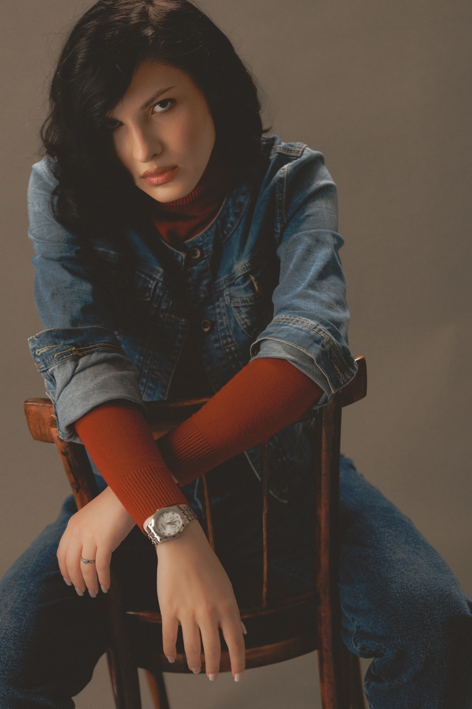
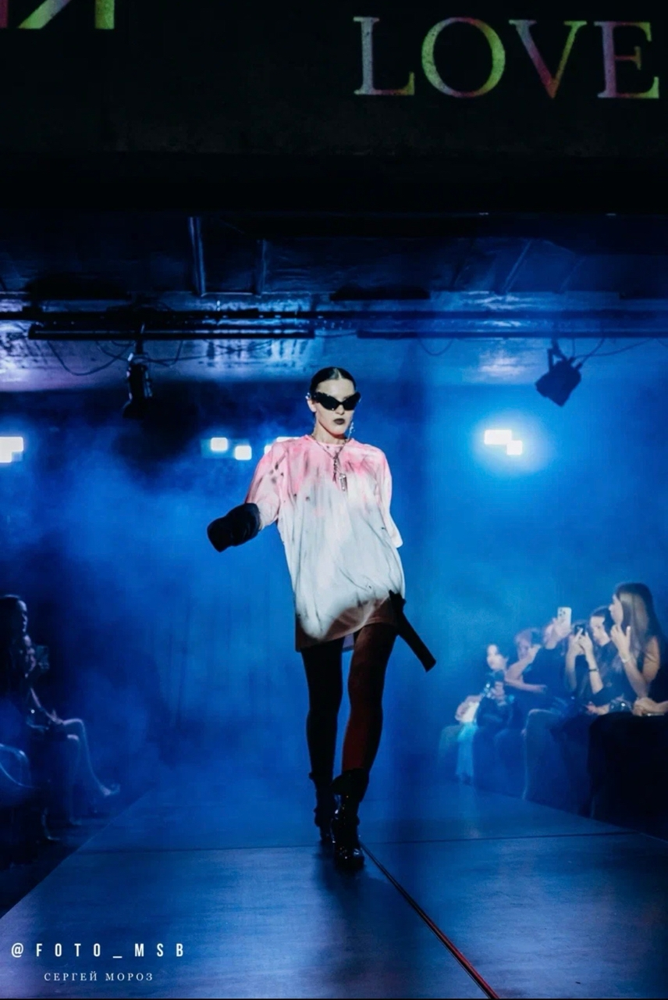
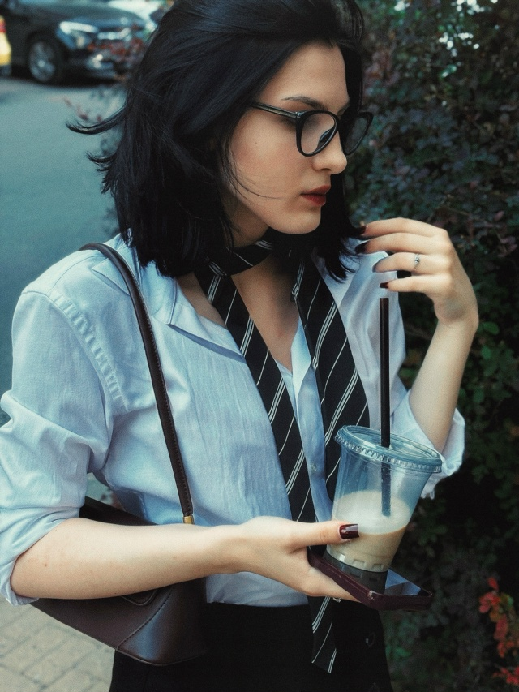

Elizaveta Pidkova · Rostov-on-Don
Елизавета
Пидкова
Модель из Ростова-на-Дону.
Fashion- и beauty-съёмки, выходы на подиум.
- Рост
- 175 см
- Грудь · талия · бёдра
- 90 · 72 · 94
- Размер
- S–M

01 / Избранное
Фотографии и портфолио
Портрет, образ, движение.
Разные стороны одной истории.
Елизавета Пидкова — модель из Ростова-на-Дону. В портфолио представлены студийные и портретные съёмки, fashion-образы и кадры с подиума. Для кастингов доступны снэпы, модельные параметры и карточка модели в PDF. Связаться по вопросам съёмок и показов можно через Telegram или Instagram.








Видео · движение
Проходка и закулисье
Посмотрите выход на подиум
и кадры со съёмки.
02 / Параметры
Модельные данные
- Возраст
- Рост
- 175 см
- Вес
- 57 кг
- Грудь / талия / бёдра
- 90 / 72 / 94 см
- Размер одежды
- S–M · 42–44
- Размер обуви
- 38
- Волосы
- Чёрные
- Глаза
- Карие
- Город
- Ростов-на-Дону
- Агентство
- —
03 / Снэпы
Снэпы модели
Анфас, 3/4 и полный рост.
 Смотреть крупнее
Смотреть крупнее  Смотреть крупнее
Смотреть крупнее  Смотреть крупнее
Смотреть крупнее  Смотреть крупнее
Смотреть крупнее 04 / Подиум
Показы и проекты
Показы и дизайнерские коллекции
с участием Елизаветы.
05 / Контакты
Создадим
новую историю?
По вопросам съёмок и показов —
личное сообщение в Telegram или Instagram Direct.